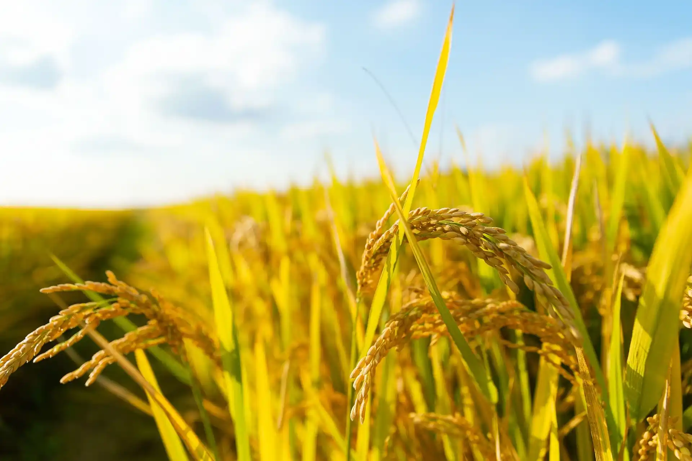
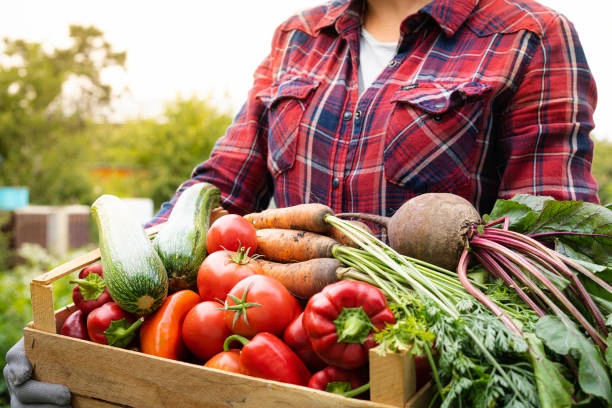
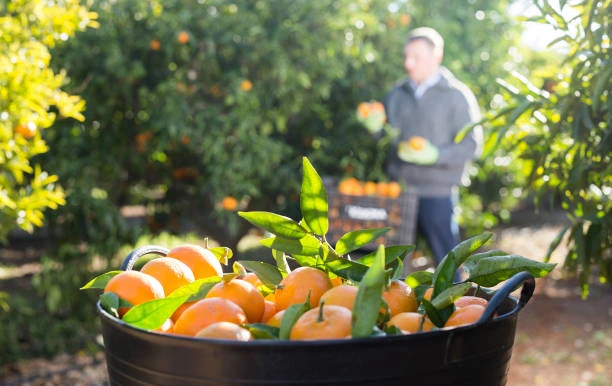
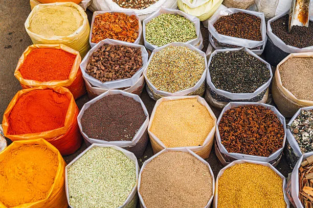

Active
Organic Farming
Admin Dashboard
FARMER COMMUNITY
Growing together. Farming smarter.
Manage farmer profiles, monitor farm activities, track productivity and build stronger connections across your organic farming community.
86%
Organic Adoption
+18%
Productivity
FARMER SPOTLIGHT
View All Farmers
Featured Farmers


Active
Meena Devi
Coimbatore, Tamil Nadu
FARM ID
FM-1087
FARM SIZE
8.2 Acres
Organic Vegetables
View Profile

Active

Pending
PERFORMANCE
View Report
Community Performance
87%
Overall
Productivity
91%
Organic Adoption
86%
Water Efficiency
82%
RECENT ACTIVITY
Farmer Activity
Arjun added a new crop
Organic Rice · Field A-12
12 min
Meena updated irrigation
Field B-07 · 3.6K L used
38 min
Ravi recorded a harvest
420 kg organic produce
1 hr
Certification approved
Farm FM-1087
2 hrs
ONBOARDING
Manage Applications
Farmer Registration Pipeline
Applications
38 received
Verified
29 approved
Farm Setup
21 in progress
Activated
17 completed
TOP CROP
Explore Crop Data
Organic Rice
74 farmers are currently growing certified organic rice.
WATER SAVING
View Water Report
18.4K Litres
Farmers collectively saved water through smart irrigation this week.
PRODUCTIVITY
View Performance
+18.6%
Average farmer productivity has increased compared with last month.